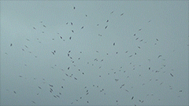
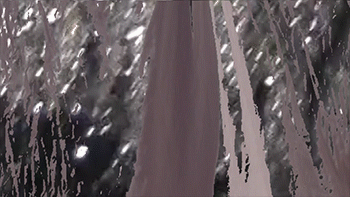
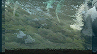

Britany Spencer
Menu
Cuerpo de obra
About sentimientos
Reflexiones sobre el tiempo
Te lo juro que no puedo
Primario profundo
Shop
Se está cayendo un árbol en el bosque y nadie lo está escuchando.


